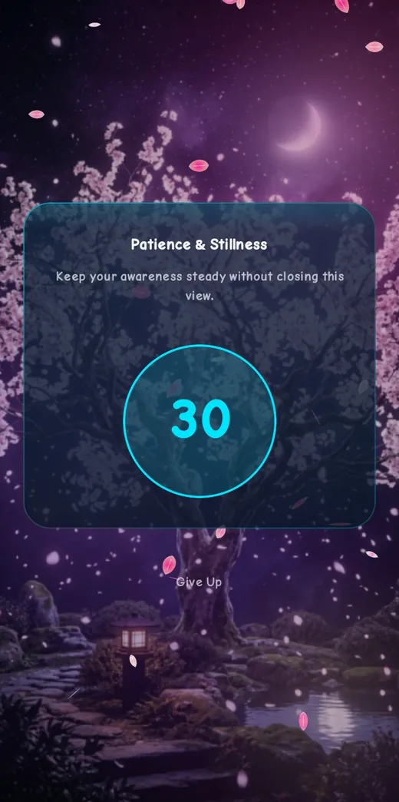
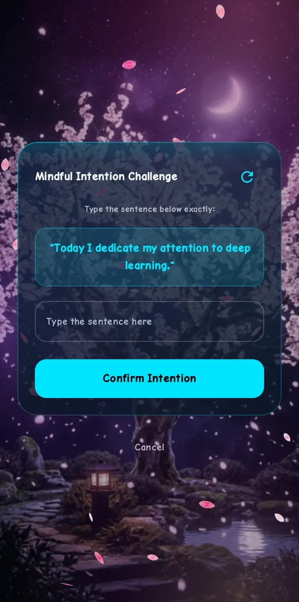

Free for Android
Take your time back from distracting apps.
FocusLock puts a calm barrier between you and the apps that eat your day. Pick the apps, set the limits, and unlock only on purpose.
Free · No account ·


Why FocusLock
Built to help, not to nag
Your data stays on your phone
Limits, usage and goals are stored on the device. There is no sign-up.
Unlocking takes intent
Time is not just cut off. You choose a small challenge that gives you a moment to decide.
Safe by design
Calls and emergency functions are never blocked, and emergency bypasses exist.
What it does
Everything you need, nothing you do not
App time limits
Set a daily limit for each app. Use templates and schedules to save time.
Automatic app locking
When the limit is reached, a block screen covers the app until you decide what to do.
Focus mode
Lock distractions for a session from 15 minutes to 2 hours.
Unlock challenges
Math, patience countdown, typing a sentence, or your PIN.
Usage tracking
See screen time, insights, goals, streaks and trends.
Themes and languages
Six animated themes and six app languages, including Bangla.
How it works
Six simple steps
- Select. Choose the apps you want to control.
- Set. Set a daily time limit for each one.
- Monitor. FocusLock tracks how long each app is used.
- Warn. You get a heads-up when a limit is close.
- Block. When time is up, a block screen covers the app.
- Decide. Stay locked in, or complete a challenge you chose to unlock.
App tour
See FocusLock in action
Real screens from the app. Take the full tour.


Unlock challenges
A pause that works
When you want more time, you complete a short challenge you turned on. It is just enough friction to ask: do I really need this?
- Mental math
- Patience and stillness countdown
- Mindful typing of a sentence
- Your own PIN



Premium
Remove ads, keep everything else
The free app shows ads. Premium turns them off. Pay with USDT through Binance Pay.
Privacy first
No account. No upload of your usage.
FocusLock keeps your data on your device and asks only for the permissions it needs to do its job.
Read the privacy page- No sign-up or login
- Usage data stays on the phone
- Calls and emergencies never blocked
- You can see why each permission is needed
FAQ
Quick answers
What is FocusLock?
FocusLock is a free Android app. You pick distracting apps, set a daily limit for each, and FocusLock puts a block screen over them when time is up.
Is FocusLock free?
Yes. The free version shows ads. Premium removes the ads and nothing else changes.
Do I need an account?
No. There is no sign-up. Your limits and usage data stay on your phone.
What permissions does it need, and why?
Usage access to measure app time, the Accessibility service to see which app is open, Display over other apps to show the block screen, and Notifications for warnings. Do Not Disturb access is optional and only used in Focus mode. See the privacy page for details.
Can I set different limits for different apps?
Yes. Every app has its own switch and its own daily limit. You can also use limit templates and schedules.
Blog